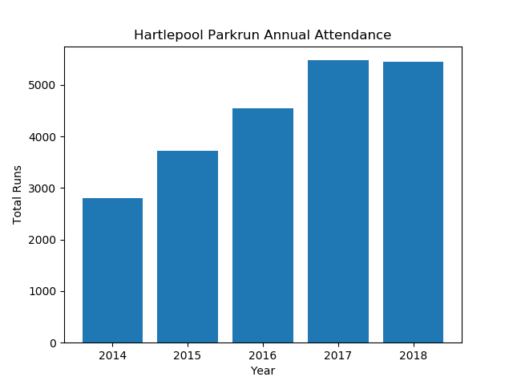
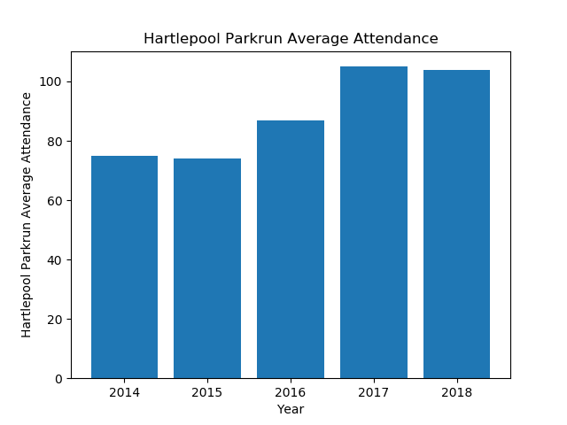
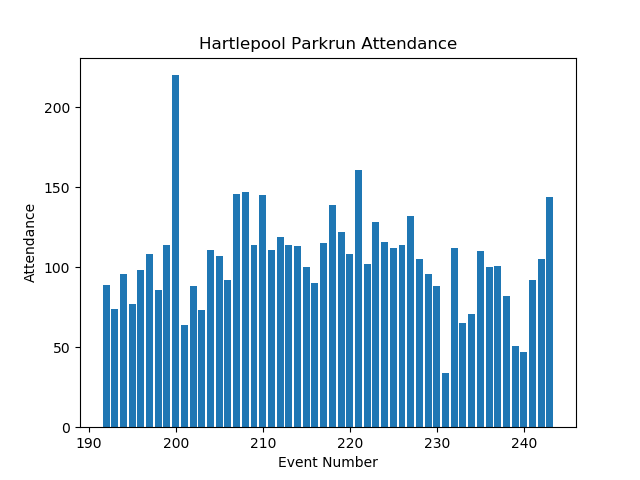
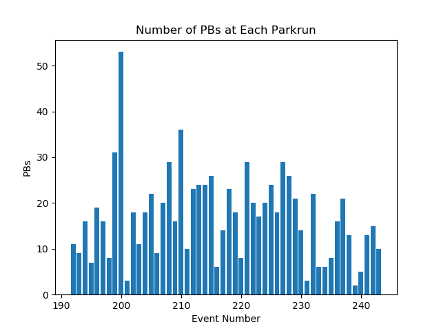
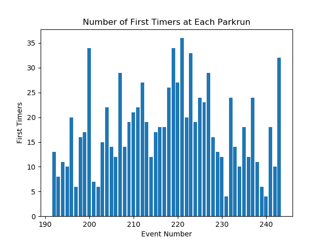

Annual Summary for Hartlepool-Rossmere Parkrun
Annual Attendance
| Year | Number of Events | Average Attendance | Number of Runs | Number of Volunteers | Number of PBs | Number of First Timers |
|---|
| 2014 | 37 | 75 | 2806 | 443 | 722 | 933 |
| 2015 | 50 | 74 | 3723 | 538 | 809 | 666 |
| 2016 | 52 | 87 | 4548 | 561 | 843 | 785 |
| 2017 | 52 | 105 | 5477 | 556 | 1072 | 1015 |
| 2018 | 52 | 104 | 5448 | 537 | 886 | 926 |


Statistics for Events between 01/01/2018 and 31/12/2018
Max Attendance = 220, Min Attendance = 34



Top Participants
Top Volunteers
Total number of volunteering events
| Name | Number of Runs | Number of Volunteers |
|---|
| 1 | Heidi MORRISON | 1 | 49 |
| 2 | Steven MORRISON | 18 | 48 |
| 3 | Michael WALLER | 0 | 41 |
| 4 | Audrey STREETING | 0 | 39 |
| 5 | Michael STREETING | 0 | 36 |
| 6 | Alison EATON | 35 | 33 |
| 7 | Carl MARCHANT | 0 | 32 |
| 8 | Yvonne TINDALE | 0 | 29 |
| 9 | Ann SMITH | 8 | 27 |
| 10 | Cheryl LAYCOCK | 0 | 23 |
| 11 | Dawn PISCHOS | 0 | 23 |
Most Runs
Total Number of Runs in the period
| Name | Number of Runs | Number of Volunteers |
|---|
| 1 | Alexander ORGAN | 57 | 0 |
| 2 | Terry ORGAN | 42 | 0 |
| 3 | Paul BACON | 39 | 1 |
| 4 | James WINDRAM | 36 | 1 |
| 5 | Alison EATON | 35 | 33 |
| 6 | Caroline HARKIN | 35 | 18 |
| 7 | Jenson WILLIAMS | 34 | 0 |
| 8 | Jane WATT | 32 | 0 |
| 9 | Macie SMITH | 32 | 0 |
| 10 | Martin John POUT | 32 | 0 |
Time on Feet
Total time spent running in the period.
| Name | Time on Feet (hours) |
|---|
| 1 | Terry ORGAN | 22.4 |
| 2 | Alexander ORGAN | 22.1 |
| 3 | Caroline HARKIN | 19.2 |
| 4 | Alison EATON | 17.2 |
| 5 | Jane WATT | 16.7 |
| 6 | Phil HOLBROOK | 16.6 |
| 7 | Madeline RUSSON | 16.5 |
| 8 | Paul BACON | 16.3 |
| 9 | Louise ATKINSON | 15.8 |
| 10 | Martin John POUT | 15.2 |
Keenest
Total Participation (run + volunteer). Note: Running and volunteering on the same day counts.
| Name | Number of Runs | Number of Volunteers | Total |
|---|
| 1 | Alison EATON | 35 | 33 | 68 |
| 2 | Steven MORRISON | 18 | 48 | 66 |
| 3 | Alexander ORGAN | 57 | 0 | 57 |
| 4 | Caroline HARKIN | 35 | 18 | 53 |
| 5 | Heidi MORRISON | 1 | 49 | 50 |
| 6 | Sarah NORMAN | 31 | 16 | 47 |
| 7 | Graham JONES | 24 | 21 | 45 |
| 8 | Kate SIRS | 26 | 17 | 43 |
| 9 | Terry ORGAN | 42 | 0 | 42 |
| 10 | Michael WALLER | 0 | 41 | 41 |
Consistency
Smallest variation (standard deviation) in run times.
| Name | Run Time SD (sec) | Number of Runs |
|---|
| 1 | Shaun NORDSTROM | 18.0 | 10 |
| 2 | Andrew CRAIG | 19.7 | 10 |
| 3 | Robert MAYES | 26.0 | 20 |
| 4 | Martin John POUT | 27.8 | 27 |
| 5 | Chris BOOTHMAN | 30.0 | 21 |
| 6 | Martin DUTOY | 30.1 | 11 |
| 7 | Joanne WILLIS | 30.2 | 23 |
| 8 | Jack HUTTON | 30.9 | 10 |
| 9 | James WINDRAM | 32.1 | 36 |
| 10 | Alison EATON | 32.3 | 30 |